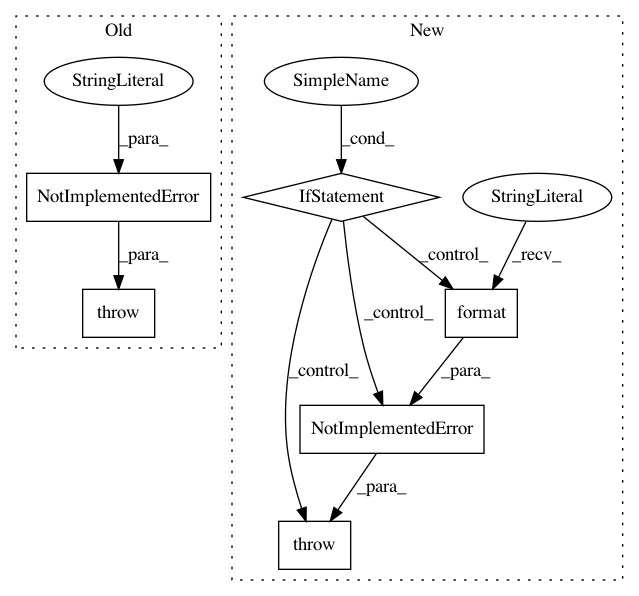

3a87faf42dd2b00b99184270eb798b7bdf8c2301,hyperspy/ui_registry.py,,get_gui,#Any#Any#Any#Any#,85
Before Change
raise ValueError(
"`toolkit` must be a string, an iterable of strings or None.")
if toolkey not in UI_REGISTRY or not UI_REGISTRY[toolkey]:
raise NotImplementedError(
"There is no user interface registered for this feature."
"Try installing ipywidgets or traitsui.")
if not display:
widgets = {}
available_toolkits = set()
used_toolkits = set()
After Change
else:
raise ValueError(
"`toolkit` must be a string, an iterable of strings or None.")
if toolkey not in UI_REGISTRY or not UI_REGISTRY[toolkey]:
propose = KNOWN_TOOLKITS - TOOLKIT_REGISTRY
if propose:
propose = ["hyperspy_gui_{}".format(tk) for tk in propose]
if len(propose) > 1:
propose_ = ", ".join(propose[:-1])
propose = propose_ + " and/or {}".format(propose[-1])
else:
propose = propose.pop()
raise NotImplementedError(
"There is no user interface registered for this feature."
"Try installing {}.".format(propose))
if not display:
widgets = {}
available_toolkits = set()
used_toolkits = set()
In pattern: SUPERPATTERN
Frequency: 3
Non-data size: 6
Instances
Project Name: hyperspy/hyperspy
Commit Name: 3a87faf42dd2b00b99184270eb798b7bdf8c2301
Time: 2017-05-23
Author: frandelapena@gmail.com
File Name: hyperspy/ui_registry.py
Class Name:
Method Name: get_gui
Project Name: datascienceinc/Skater
Commit Name: 6fa6f35f04cd50e1cf75ba9e570e1ec3781cc263
Time: 2017-05-05
Author: aikramer2@gmail.com
File Name: lynxes/data/dataset.py
Class Name: DataManager
Method Name: generate_column_sample
Project Name: tristandeleu/pytorch-maml-rl
Commit Name: 928f1d0b3ba401ea7614f19f3595e1a44c171205
Time: 2020-01-11
Author: tristan.deleu@gmail.com
File Name: maml_rl/utils/torch_utils.py
Class Name:
Method Name: detach_distribution